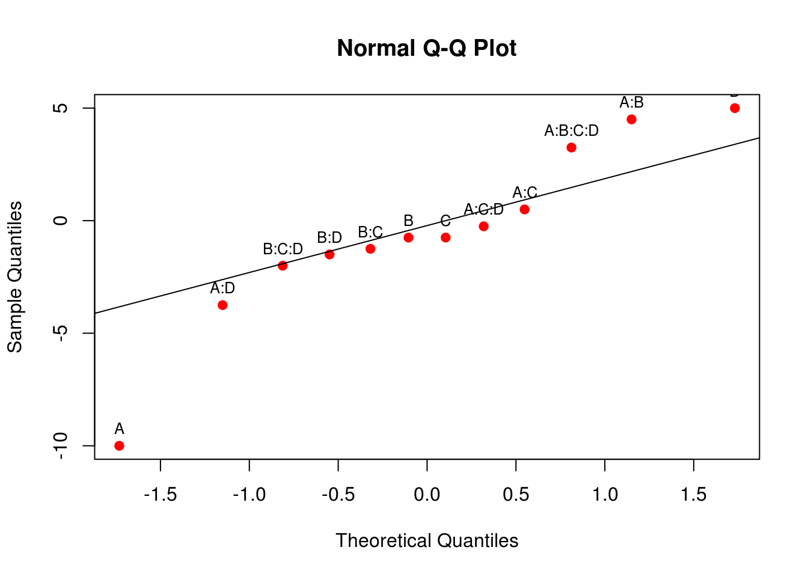
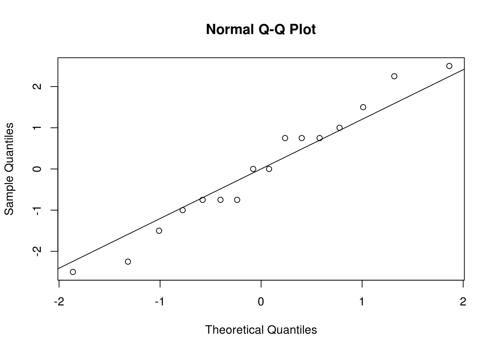

Técnicas de confundimento para blocagem em fatoriais \(2^k\)
Introdução
Existem certas situações em que é praticamente impossível fazer todas as corridas de um experimento em condições uniformes. Por exemplo, pode haver limitações da quantidade de matéria prima, ou matéria prima de diversas origens. As condições de contorno podem mudar ao longo do ensaio (temperatura, ventilação, luz). Pode existir um número elevado de tratamentos difícil de acomodar em um curto espaço de tempo/espaço ou reduzído número de instrumentos/operadores, além de ser desejável variar as condições de contorno para garantir eficiência/robustez aos resultados. A técnica experimental adotada nessas situações é a blocagem.
A idéia central da blocagem é fazer com que as unidades experimentais (UEs) sejam homogêneas dentro dos blocos. Os blocos são completos quando em cada bloco existe pelo menos uma UE de cada tratamento, e incompleto caso contrário.
Nos experimentos \(2^k\) existe uma série de opções de blocagem. A primeira é repetir o experimento de forma que cada repetição completa (que inclui todos os tratamentos) seja um bloco. É o caso comum quando tem-se poucos tratamentos (geralmente \(2^2\) ou \(2^3\)), e nesses casos específicos temos um fatorial com blocos completos.
Como nos experimentos fatorias \(2^k\) (\(k \geq 3\)) o número de tratamentos geralmente é grande, devido ao caráter exploratório do experimento, os blocos dificilmente cumprirão seu papel se forem completos, por isso geralmente adota-se blocos incompletos. Nesse caso os tratamentos devem ser particionados e atribuídos aos blocos. Nada impede que essa partição dos tratamentos seja aleatória, porém quando feita estrategicamente leva-se algumas vantagens.
A estratégia adotada para se atribuir os tratamentos aos blocos é a de confundimento. A idéia central é tomar interações de alta ordem e propositalmente confundir o efeito dessa interação com o efeito dos blocos. Isso porque interações de ordem alta dificilmente são interpretáveis, e o efeito dos blocos não é do interesse do pesquisador. O bloco está presente para acomodar alterações das condições de contorno. Dessa forma, não é desconforto ter esses efeitos confundidos/misturados quando o foco do experimento são os efeitos principais e interações de ordem mais baixa.
Vamos considerar a construção e análise de fatoriais \(2^k\) em \(2^p\) blocos incompletos, onde \(p < k\). Consequentemente, estes experimentos podem ser divididos em 2, 4, 8, \(\ldots\) blocos.
Blocagem em um experimento fatorial \(2^k\) com repetição
Se um experimento fatorial \(2^k\) for replicado \(r\) vezes sob condições não homogêneas, então cada conjunto destas condições com todos os tratamentos definem um bloco. Portanto, teríamos \(r\) blocos completos. As corridas em cada bloco devem ser realizadas de forma aleatória.
A análise do experimento nesse caso é idêntica àquela de um experimento fatorial \(2^k\) sem blocos, com a exceção de que haverá também uma soma de quadrados para bloco, dada por
\[ SQ_{Bloco} = \frac{\sum_{i=1}^r B_i^2}{2^k} - \frac{(\sum_{i=1}^{n} y_i)^2}{n} \]
onde \(B_i\) é o total de cada bloco \(i\), \((\sum_{i=1}^{n} y_i)^2/n\) é a chamada correção de somas de quadrados, e \(n\) é o número total de corridas do experimento.
Exemplos
Experimento \(2^2\) em blocos completos
Um processo químico é investigado em relação à dois fatores e o experimento é conduzido em 3 blocos completos. Os resultados estão abaixo. Faça a análise estatística dos resultados.
bloco 1 b 2 b 3
(1) = 28 25 27
a = 36 32 32
b = 16 19 23
ab = 31 30 29##----------------------------------------------------------------------
## Cria os dados
da <- expand.grid(A = c(-1, 1),
B = c(-1, 1),
bloco = c("I", "II", "III"))
da$y <- c(28,36,16,31,25,32,19,30,27,32,23,29)
da
# A B bloco y
# 1 -1 -1 I 28
# 2 1 -1 I 36
# 3 -1 1 I 16
# 4 1 1 I 31
# 5 -1 -1 II 25
# 6 1 -1 II 32
# 7 -1 1 II 19
# 8 1 1 II 30
# 9 -1 -1 III 27
# 10 1 -1 III 32
# 11 -1 1 III 23
# 12 1 1 III 29
## Note que bloco deve ser fator
str(da, give.attr = FALSE)
# 'data.frame': 12 obs. of 4 variables:
# $ A : num -1 1 -1 1 -1 1 -1 1 -1 1 ...
# $ B : num -1 -1 1 1 -1 -1 1 1 -1 -1 ...
# $ bloco: Factor w/ 3 levels "I","II","III": 1 1 1 1 2 2 2 2 3 3 ...
# $ y : num 28 36 16 31 25 32 19 30 27 32 ...
##----------------------------------------------------------------------
## Ajustando o modelo
m0 <- lm(y ~ bloco + A * B, data = da)
anova(m0)
# Analysis of Variance Table
#
# Response: y
# Df Sum Sq Mean Sq F value Pr(>F)
# bloco 2 4.167 2.083 0.3304 0.7309303
# A 1 225.333 225.333 35.7357 0.0009834 ***
# B 1 85.333 85.333 13.5330 0.0103463 *
# A:B 1 12.000 12.000 1.9031 0.2169434
# Residuals 6 37.833 6.306
# ---
# Signif. codes: 0 '***' 0.001 '**' 0.01 '*' 0.05 '.' 0.1 ' ' 1
## Ajustando o modelo sem a interação, que não foi significativa
m1 <- update(m0, . ~ . - A:B)
anova(m1)
# Analysis of Variance Table
#
# Response: y
# Df Sum Sq Mean Sq F value Pr(>F)
# bloco 2 4.167 2.083 0.2926 0.7549907
# A 1 225.333 225.333 31.6522 0.0007941 ***
# B 1 85.333 85.333 11.9866 0.0105166 *
# Residuals 7 49.833 7.119
# ---
# Signif. codes: 0 '***' 0.001 '**' 0.01 '*' 0.05 '.' 0.1 ' ' 1Experimento \(2^3\) em blocos completos
Uma planejamento fatorial \(2^3\) foi corrido em um processo químico. Os fatores do planejamento são A = tempo, B = concentração, C = pressão. Duas repetições foram feitas em horas distintas do dia idetificadas pelo nível de bloco. A variável resposta é o rendimento. Os dados estão disponíveis com os comandos a seguir. Faça a análise estatística dos resultados.
##----------------------------------------------------------------------
## Cria os dados
da <- expand.grid(A = c(-1, 1),
B = c(-1, 1),
C = c(-1, 1),
bloco = c("I", "II"))
da$y <- c(12,18,13,16,17,15,20,25,10,25,13,24,19,21,17,23)
da
# A B C bloco y
# 1 -1 -1 -1 I 12
# 2 1 -1 -1 I 18
# 3 -1 1 -1 I 13
# 4 1 1 -1 I 16
# 5 -1 -1 1 I 17
# 6 1 -1 1 I 15
# 7 -1 1 1 I 20
# 8 1 1 1 I 25
# 9 -1 -1 -1 II 10
# 10 1 -1 -1 II 25
# 11 -1 1 -1 II 13
# 12 1 1 -1 II 24
# 13 -1 -1 1 II 19
# 14 1 -1 1 II 21
# 15 -1 1 1 II 17
# 16 1 1 1 II 23
str(da, give.attr = FALSE)
# 'data.frame': 16 obs. of 5 variables:
# $ A : num -1 1 -1 1 -1 1 -1 1 -1 1 ...
# $ B : num -1 -1 1 1 -1 -1 1 1 -1 -1 ...
# $ C : num -1 -1 -1 -1 1 1 1 1 -1 -1 ...
# $ bloco: Factor w/ 2 levels "I","II": 1 1 1 1 1 1 1 1 2 2 ...
# $ y : num 12 18 13 16 17 15 20 25 10 25 ...
##----------------------------------------------------------------------
## Ajuste do modelo
m0 <- lm(y ~ bloco + A * B * C, data = da)
anova(m0)
# Analysis of Variance Table
#
# Response: y
# Df Sum Sq Mean Sq F value Pr(>F)
# bloco 1 16.00 16.000 1.6232 0.24331
# A 1 132.25 132.250 13.4167 0.00804 **
# B 1 12.25 12.250 1.2428 0.30175
# C 1 42.25 42.250 4.2862 0.07718 .
# A:B 1 1.00 1.000 0.1014 0.75939
# A:C 1 36.00 36.000 3.6522 0.09760 .
# B:C 1 9.00 9.000 0.9130 0.37113
# A:B:C 1 20.25 20.250 2.0543 0.19489
# Residuals 7 69.00 9.857
# ---
# Signif. codes: 0 '***' 0.001 '**' 0.01 '*' 0.05 '.' 0.1 ' ' 1
## Ajustando o modelo apenas com efeitos significativos. Note que bloco
## deve permanecer pois faz parte do delineamento
m1 <- update(m0, . ~ bloco + A * C)
anova(m1)
# Analysis of Variance Table
#
# Response: y
# Df Sum Sq Mean Sq F value Pr(>F)
# bloco 1 16.00 16.000 1.5785 0.235007
# A 1 132.25 132.250 13.0471 0.004083 **
# C 1 42.25 42.250 4.1682 0.065921 .
# A:C 1 36.00 36.000 3.5516 0.086171 .
# Residuals 11 111.50 10.136
# ---
# Signif. codes: 0 '***' 0.001 '**' 0.01 '*' 0.05 '.' 0.1 ' ' 1Comparando \(2^3\) com e sem blocos
Considere os dados de um experimento descrito em Box, Hunter e Hunter (2005), capítulo 5. O experimento consiste de um fatorial \(2^3\) com 3 repetições. Primeiro fazemos a análise considerando apenas as repetições e depois considerando que cada repetição fazia parte, na verdade, de um bloco. (Observação: isso já foi um exercício na página de fatoriais \(2^k\)).
##----------------------------------------------------------------------
## Importa os dados
url <- "http://leg.ufpr.br/~fernandomayer/data/BHH2/exe0503.dat"
db <- read.table(url, header = TRUE)
str(db)
# 'data.frame': 8 obs. of 10 variables:
# $ test : int 1 2 3 4 5 6 7 8
# $ depth : int -1 1 -1 1 -1 1 -1 1
# $ depthLevel : num 0.5 1.5 0.5 1.5 0.5 1.5 0.5 1.5
# $ watering : int -1 -1 1 1 -1 -1 1 1
# $ wateringLevel: Factor w/ 2 levels "once","twice": 1 1 2 2 1 1 2 2
# $ type : int -1 -1 -1 -1 1 1 1 1
# $ typeLevel : Factor w/ 2 levels "baby","large": 1 1 1 1 2 2 2 2
# $ rep1 : int 6 4 10 7 4 3 8 5
# $ rep2 : int 7 5 9 7 5 3 7 5
# $ rep3 : int 6 5 8 6 4 1 7 4
db
# test depth depthLevel watering wateringLevel type typeLevel rep1 rep2
# 1 1 -1 0.5 -1 once -1 baby 6 7
# 2 2 1 1.5 -1 once -1 baby 4 5
# 3 3 -1 0.5 1 twice -1 baby 10 9
# 4 4 1 1.5 1 twice -1 baby 7 7
# 5 5 -1 0.5 -1 once 1 large 4 5
# 6 6 1 1.5 -1 once 1 large 3 3
# 7 7 -1 0.5 1 twice 1 large 8 7
# 8 8 1 1.5 1 twice 1 large 5 5
# rep3
# 1 6
# 2 5
# 3 8
# 4 6
# 5 4
# 6 1
# 7 7
# 8 4
## Com os dados nesse formato, é necessário "empilhar" o data frame
library(reshape)
db2 <- melt(db[, c("depth", "watering", "type", "rep1", "rep2", "rep3")],
id = c("depth", "watering", "type"))
db2
# depth watering type variable value
# 1 -1 -1 -1 rep1 6
# 2 1 -1 -1 rep1 4
# 3 -1 1 -1 rep1 10
# 4 1 1 -1 rep1 7
# 5 -1 -1 1 rep1 4
# 6 1 -1 1 rep1 3
# 7 -1 1 1 rep1 8
# 8 1 1 1 rep1 5
# 9 -1 -1 -1 rep2 7
# 10 1 -1 -1 rep2 5
# 11 -1 1 -1 rep2 9
# 12 1 1 -1 rep2 7
# 13 -1 -1 1 rep2 5
# 14 1 -1 1 rep2 3
# 15 -1 1 1 rep2 7
# 16 1 1 1 rep2 5
# 17 -1 -1 -1 rep3 6
# 18 1 -1 -1 rep3 5
# 19 -1 1 -1 rep3 8
# 20 1 1 -1 rep3 6
# 21 -1 -1 1 rep3 4
# 22 1 -1 1 rep3 1
# 23 -1 1 1 rep3 7
# 24 1 1 1 rep3 4
##----------------------------------------------------------------------
## Modelo considerando as repetições
m0 <- lm(value ~ depth * watering * type, data = db2)
anova(m0)
# Analysis of Variance Table
#
# Response: value
# Df Sum Sq Mean Sq F value Pr(>F)
# depth 1 28.167 28.167 52.0000 2.075e-06 ***
# watering 1 37.500 37.500 69.2308 3.319e-07 ***
# type 1 24.000 24.000 44.3077 5.517e-06 ***
# depth:watering 1 0.667 0.667 1.2308 0.2837
# depth:type 1 0.167 0.167 0.3077 0.5868
# watering:type 1 0.167 0.167 0.3077 0.5868
# depth:watering:type 1 0.000 0.000 0.0000 1.0000
# Residuals 16 8.667 0.542
# ---
# Signif. codes: 0 '***' 0.001 '**' 0.01 '*' 0.05 '.' 0.1 ' ' 1
## Mantém apenas efeitos principais
m0 <- update(m0, . ~ depth + watering + type)
anova(m0)
# Analysis of Variance Table
#
# Response: value
# Df Sum Sq Mean Sq F value Pr(>F)
# depth 1 28.167 28.167 58.276 2.385e-07 ***
# watering 1 37.500 37.500 77.586 2.554e-08 ***
# type 1 24.000 24.000 49.655 7.809e-07 ***
# Residuals 20 9.667 0.483
# ---
# Signif. codes: 0 '***' 0.001 '**' 0.01 '*' 0.05 '.' 0.1 ' ' 1
##----------------------------------------------------------------------
## Modelo considerando as repetições como blocos
## Bloco aqui é "variable"
m1 <- lm(value ~ variable + (depth * watering * type), data = db2)
anova(m1)
# Analysis of Variance Table
#
# Response: value
# Df Sum Sq Mean Sq F value Pr(>F)
# variable 2 3.583 1.792 4.9344 0.02388 *
# depth 1 28.167 28.167 77.5738 4.394e-07 ***
# watering 1 37.500 37.500 103.2787 7.647e-08 ***
# type 1 24.000 24.000 66.0984 1.134e-06 ***
# depth:watering 1 0.667 0.667 1.8361 0.19687
# depth:type 1 0.167 0.167 0.4590 0.50913
# watering:type 1 0.167 0.167 0.4590 0.50913
# depth:watering:type 1 0.000 0.000 0.0000 1.00000
# Residuals 14 5.083 0.363
# ---
# Signif. codes: 0 '***' 0.001 '**' 0.01 '*' 0.05 '.' 0.1 ' ' 1
## Mantém apenas efeitos principais
m1 <- update(m1, . ~ variable + depth + watering + type)
anova(m1)
# Analysis of Variance Table
#
# Response: value
# Df Sum Sq Mean Sq F value Pr(>F)
# variable 2 3.583 1.792 5.3014 0.01548 *
# depth 1 28.167 28.167 83.3425 3.560e-08 ***
# watering 1 37.500 37.500 110.9589 3.989e-09 ***
# type 1 24.000 24.000 71.0137 1.160e-07 ***
# Residuals 18 6.083 0.338
# ---
# Signif. codes: 0 '***' 0.001 '**' 0.01 '*' 0.05 '.' 0.1 ' ' 1Comparando os resultados da ANOVA, vemos que:
print(anova(m0), signif.stars = FALSE)
# Analysis of Variance Table
#
# Response: value
# Df Sum Sq Mean Sq F value Pr(>F)
# depth 1 28.167 28.167 58.276 2.385e-07
# watering 1 37.500 37.500 77.586 2.554e-08
# type 1 24.000 24.000 49.655 7.809e-07
# Residuals 20 9.667 0.483
print(anova(m1), signif.stars = FALSE)
# Analysis of Variance Table
#
# Response: value
# Df Sum Sq Mean Sq F value Pr(>F)
# variable 2 3.583 1.792 5.3014 0.01548
# depth 1 28.167 28.167 83.3425 3.560e-08
# watering 1 37.500 37.500 110.9589 3.989e-09
# type 1 24.000 24.000 71.0137 1.160e-07
# Residuals 18 6.083 0.338O que muda na ANOVA é apenas a inclusão do bloco. As somas de quadrados dos efeitos continuam as mesmas. O que muda é a soma de quadrados e graus de liberdade dos resíduos, que por consequência vai mudar o quadrado médio do residuo, altera o teste F e a estimativa da variância (que naturalmente deve ser menor devido à inclusão de bloco).
Agora podemos analisar a diferença nas estimativas dos efeitos:
coef(m0)
# (Intercept) depth watering type
# 5.666667 -1.083333 1.250000 -1.000000
coef(m1)
# (Intercept) variablerep2 variablerep3 depth watering
# 5.875000 0.125000 -0.750000 -1.083333 1.250000
# type
# -1.000000Os efeitos dos fatores não mudam, mas são também calculados os efeitos de bloco. A média geral também foi alterada. Por que? Lembre-se que da forma como foi declarado o modelo na função lm(), o bloco (variable) é um fator e por padrão será codificado com o contraste de zerar o primeiro nível. Com isso, o intercepto nesse caso é a média geral acrescentada do efeito do primeiro nível de bloco.
Para ficarmos com os efeitos compatíveis, devemos então declarar o modelo especificando que o contraste para o bloco deve ser o soma zero.
m2 <- lm(value ~ variable + (depth + watering + type), data = db2,
contrasts = list(variable = "contr.sum"))
coef(m2)
# (Intercept) variable1 variable2 depth watering type
# 5.6666667 0.2083333 0.3333333 -1.0833333 1.2500000 -1.0000000Agora os coeficientes são:
coef(m0)
# (Intercept) depth watering type
# 5.666667 -1.083333 1.250000 -1.000000
coef(m1)
# (Intercept) variablerep2 variablerep3 depth watering
# 5.875000 0.125000 -0.750000 -1.083333 1.250000
# type
# -1.000000
coef(m2)
# (Intercept) variable1 variable2 depth watering type
# 5.6666667 0.2083333 0.3333333 -1.0833333 1.2500000 -1.0000000Dessa forma, o intercepto volta a ser a média geral do experimento. Note que, de qualquer maneira, não estamos interessados nas estimativas dos efeitos de blocos já que eles fazem parte do desenho do experimento.
Podemos comparar também a estimativa do erro-padrão e os testes de hipótese:
summary(m0)$coefficients
# Estimate Std. Error t value Pr(>|t|)
# (Intercept) 5.666667 0.1419116 39.930975 1.508079e-20
# depth -1.083333 0.1419116 -7.633863 2.385275e-07
# watering 1.250000 0.1419116 8.808303 2.554204e-08
# type -1.000000 0.1419116 -7.046643 7.809323e-07
summary(m2)$coefficients
# Estimate Std. Error t value Pr(>|t|)
# (Intercept) 5.6666667 0.1186667 47.752788 2.063262e-20
# variable1 0.2083333 0.1678201 1.241409 2.303894e-01
# variable2 0.3333333 0.1678201 1.986254 6.244819e-02
# depth -1.0833333 0.1186667 -9.129209 3.560289e-08
# watering 1.2500000 0.1186667 10.533703 3.988864e-09
# type -1.0000000 0.1186667 -8.426963 1.159624e-07O erro-padrão dos efeitos se altera pois o QM do resíduo foi alterado com a inclusão do bloco. OS EPs ficam menores quando se consideraram blocos.
Confundimento do fatorial \(2^k\) em dois blocos
A idéia central é dividir as \(2^k\) UEs igualmente em dois blocos de forma que uma interação de ordem que não tenha interesse seja confundida com o efeito dos blocos. É usual usar a interação de maior ordem para fazer a divisão, que é relativamente simples: aquelas UEs com sinal (-) serão de um bloco e as de sinal (+) serão do outro. Pode-se fazer essa separação obtendo a coluna de sinais da interação mais alta ou usando o contraste de definição.
Blocagem de um fatorial \(2^2\) em dois blocos
Considere um planejamento \(2^2\) onde cada uma das 4 combinações de tratamentos requeira quatro horas de análise de laboratório. Dessa forma, dois dias são necessários para realizar o experimento. Se dias forem considerados como blocos, então temos que atribuir duas das quatro combinações em cada dia.
Este experimento está representado na figura abaixo
Bloco I Bloco II
[+] b--------------ab +
| | | +-------+ +-------+
| | | | | | |
| | | | (1) | | a |
B | | | | | | |
| | | | | | |
| | | | ab | | b |
| | | | | | |
[-] (1)-------------a + +-------+ +-------+
[-] A [+]Note que o bloco I contém as combinações de tratamento (1) e ab, e que o bloco II contém a e b. Lembrando que os contrastes para estimar os efeitos dos fatores A e B são
\[ \begin{align} contr_A = (ab + a) - (b + (1)) \\ contr_B = (ab + b) - (a + (1)) \end{align} \]
Observe que estes contrastes não são afetados pela blocagem, uma vez que em cada contraste há uma combinação de tratamentos mais e outra menos, provenientes de cada bloco. Portanto, qualquer diferença entre o bloco I e o bloco II será cancelada.
O contraste para a interação é
\[ contr_{AB} = (ab + (1)) - (a + b) \]
Já que as duas combinações de tratamento com sinal mais (ab e (1)) estão no bloco I, e as duas com sinal menos estão no bloco II (a e b), o efeito do bloco e da interação AB é o mesmo. Ou seja, a interação AB está confundida com os blocos.
A razão para isso está clara quando analisamos a tabela de sinais para o planejamento \(2^2\):
# A B AB
# (1) -1 -1 1
# a 1 -1 -1
# b -1 1 -1
# ab 1 1 1Dessa tabela, vemos que todas as combinações de tratamentos que possuem sinal mais em AB são atribuídas ao bloco I, enquanto que os tratamentos com sinal menos em AB são atribuídas ao bloco II.
Essa abordagem pode ser usada para confundir qualquer efeito (A, B, ou AB) com blocos. Por exemplo, se a e ab estivessem no bloco I, e (1) e b no bloco II, então seria o efeito A que estaria confundido com blocos. A prática usual é confundir a interação de ordem mais alta com blocos, já que geralmente essa interação não tem interpretação prática e normalmente também não é significativa.
Além disso, a definição de dois blocos em qualquer esquema fatorial \(2^k\) pode ser feita por essa abordagem.
Blocagem de um fatorial \(2^3\) em dois blocos
Considere um planejamento fatorial \(2^3\). Para definir os tratamentos que serão atribuídos a cada bloco, vamos considerar a interação de ordem mais alta, ABC. Pela tabela de sinais desse planejamento, vamos atribuir os tratamentos com sinal menos na coluna ABC ao bloco I, e os tratamentos com sinal mais na coluna ABC ao bloco II.
# A B C ABC
# (1) -1 -1 -1 -1
# a 1 -1 -1 1
# b -1 1 -1 1
# ab 1 1 -1 -1
# c -1 -1 1 1
# ac 1 -1 1 -1
# bc -1 1 1 -1
# abc 1 1 1 1O planejamento resultante pode ser visto na representação geométrica abaixo.
Bloco I | Bloco II
|
bc -------- | -------- abc
.| .| | .| .|
__|______ab | | b__|______ |
| | | | | | | | |
B | ------|--ac | B | c -----|--
| . | . C | | . | . C
(1)________| | |_________a
A | ANovamente, é importante lembrar que a combinação de tratamentos dentro de cada bloco deve ser atribuída de forma aleatória.
Blocagem de experimentos fatoriais \(2^k\) em dois blocos usando contraste de definição
Outro método mais geral para construir os blocos é através dos contrastes de definição. Este método usa uma combinção linear
\[ L = \alpha_1 x_1 + \alpha_2 x_2 + \cdots + \alpha_k x_k \]
onde \(x_i\) é o nível do \(i\)-ésimo fator aparecendo em uma combinação de tratamentos (codificado como 0 e 1, para baixo e alto, respectivamente), e \(\alpha_i\) é o expoente aparecendo no \(i\)-ésimo fator no efeito que deve ser confundido. Por exemplo, se o efeito a ser confundido for ABCD, então os valores de \(\alpha_i\) serão todos iguais a 1, pois \(ABCD = A^1B^1C^1D^1\). Se o efeito a ser confundido for ACD, então os valores serão \(\alpha_1 = \alpha_3 = \alpha_4 = 1\), e \(\alpha_2 = 0\), pois \(ACD = A^1B^0C^1D^1\).
Dessa forma, para o sistema \(2^k\), temos tanto \(\alpha_i = 0\) ou \(1\), e \(x_i = 0\) (nível baixo) ou \(1\) (nível alto). Combinações de tratamentos que produzam o mesmo valor de \(L \mod 2\) serão colocados no mesmo bloco. Como os únicos valores possíveis de \(L \mod 2\) são 0 e 1, isso atribuirá as \(2^k\) combinações de tratamentos à exatamente dois blocos.
NOTA: a função \(x \mod 2\) retorna o resto da divisão de x pelo número 2. \(\text{mod}\) é a função módulo, e no R é representada por
%%.
Como exemplo, considere um planejamento \(2^3\), com a interação ABC (a de ordem mais alta) confundida com bloco. Aqui, \(x_1\) corresponde a A, \(x_2\) a B, e \(x_3\) a C. Portanto, temos que \(\alpha_1 = \alpha_2 = \alpha_3 = 1\), pois como o fator a ser confundido é ABC, então o expoente destes três fatores é 1. Portanto, o contraste de definição utilizado para confundir ABC com blocos é
\[ L = x_1 + x_2 + x_3 \]
Com a finalidade de atribuir as combinações de tratamentos aos dois blocos, substituímos as combinações de tratamentos ao contraste de definição, como segue:
\[ \begin{align} (1):& \quad L = 1(0) + 1(0) + 1(0) = 0 \mod 2 = 0 \\ a:& \quad L = 1(1) + 1(0) + 1(0) = 1 \mod 2 = 1 \\ b:& \quad L = 1(0) + 1(1) + 1(0) = 1 \mod 2 = 1 \\ ab:& \quad L = 1(1) + 1(1) + 1(0) = 2 \mod 2 = 0 \\ c:& \quad L = 1(0) + 1(0) + 1(1) = 1 \mod 2 = 1 \\ ac:& \quad L = 1(1) + 1(0) + 1(1) = 2 \mod 2 = 0 \\ bc:& \quad L = 1(0) + 1(1) + 1(1) = 2 \mod 2 = 0 \\ abc:& \quad L = 1(1) + 1(1) + 1(1) = 3 \mod 2 = 1 \end{align} \]
NOTE que na notação \((0,1)\), a combinação
(1)é representada por 000,apor 100,bpor 010, e assim por diante.
Dessa forma, as combinações (1), ab, ac, e bc são corridas no bloco I, enquanto que a, b, c, e abc são corridas no bloco 2. Veja que esta atribuição é idêntica àquela realizada ao se utilizar a coluna ABC da tabela de sinais. O contraste de definição é apenas uma generalização daquele método.
Exemplos
Fatorial \(2^3\) com a notação (0,1):
da <- expand.grid(A = c(0, 1),
B = c(0, 1),
C = c(0, 1))
row.names(da) <- c("(1)", "a", "b", "ab", "c", "ac", "bc", "abc")
da
# A B C
# (1) 0 0 0
# a 1 0 0
# b 0 1 0
# ab 1 1 0
# c 0 0 1
# ac 1 0 1
# bc 0 1 1
# abc 1 1 1Montando o contraste de definição, considerando a interação ABC confundida com bloco
## alpha = 1,1,1 pois A, B e C estão presentes nesse efeito
alpha <- c(1, 1, 1)
## Cálculo dos contrastes para cada combinação de tratamento, já
## considerando mod 2
## (1)
sum(alpha * da[1, ]) %% 2
# [1] 0
## a
sum(alpha * da[2, ]) %% 2
# [1] 1
## E assim por diante... Para facilitar podemos usar apply
apply(da, 1, function(x) sum(alpha * x) %% 2)
# (1) a b ab c ac bc abc
# 0 1 1 0 1 0 0 1
## E criar uma função para calcular L mod 2
contr.def <- function(alpha, x){
sum(alpha * x) %% 2
}
## Assim podemos atribuir os blocos diretamente usando essa função
da$bloco <- apply(da, 1, contr.def, alpha = alpha)
da
# A B C bloco
# (1) 0 0 0 0
# a 1 0 0 1
# b 0 1 0 1
# ab 1 1 0 0
# c 0 0 1 1
# ac 1 0 1 0
# bc 0 1 1 0
# abc 1 1 1 1
## Ordenando
da[order(da$bloco), ]
# A B C bloco
# (1) 0 0 0 0
# ab 1 1 0 0
# ac 1 0 1 0
# bc 0 1 1 0
# a 1 0 0 1
# b 0 1 0 1
# c 0 0 1 1
# abc 1 1 1 1Dividindo um fatorial \(2^4\) em dois blocos, pela tabela de sinais:
da <- do.call(expand.grid, replicate(4, list(c(-1, 1))))
names(da) <- LETTERS[1:ncol(da)]
row.names(da) <- apply(da, 1,
function(i) paste(letters[1:4][i==1], collapse = ""))
row.names(da)[1] <- "(1)"
da
# A B C D
# (1) -1 -1 -1 -1
# a 1 -1 -1 -1
# b -1 1 -1 -1
# ab 1 1 -1 -1
# c -1 -1 1 -1
# ac 1 -1 1 -1
# bc -1 1 1 -1
# abc 1 1 1 -1
# d -1 -1 -1 1
# ad 1 -1 -1 1
# bd -1 1 -1 1
# abd 1 1 -1 1
# cd -1 -1 1 1
# acd 1 -1 1 1
# bcd -1 1 1 1
# abcd 1 1 1 1Usando a interação de ordem mais alta, ABCD, para confundir com blocos:
da$ABCD <- with(da, A * B * C * D)
da
# A B C D ABCD
# (1) -1 -1 -1 -1 1
# a 1 -1 -1 -1 -1
# b -1 1 -1 -1 -1
# ab 1 1 -1 -1 1
# c -1 -1 1 -1 -1
# ac 1 -1 1 -1 1
# bc -1 1 1 -1 1
# abc 1 1 1 -1 -1
# d -1 -1 -1 1 -1
# ad 1 -1 -1 1 1
# bd -1 1 -1 1 1
# abd 1 1 -1 1 -1
# cd -1 -1 1 1 1
# acd 1 -1 1 1 -1
# bcd -1 1 1 1 -1
# abcd 1 1 1 1 1
da <- da[order(da$ABCD), ]
da
# A B C D ABCD
# a 1 -1 -1 -1 -1
# b -1 1 -1 -1 -1
# c -1 -1 1 -1 -1
# abc 1 1 1 -1 -1
# d -1 -1 -1 1 -1
# abd 1 1 -1 1 -1
# acd 1 -1 1 1 -1
# bcd -1 1 1 1 -1
# (1) -1 -1 -1 -1 1
# ab 1 1 -1 -1 1
# ac 1 -1 1 -1 1
# bc -1 1 1 -1 1
# ad 1 -1 -1 1 1
# bd -1 1 -1 1 1
# cd -1 -1 1 1 1
# abcd 1 1 1 1 1
## Croqui do experimento
matrix(row.names(da), ncol = 2,
dimnames = list(1:8, paste("Bloco", 1:2)))
# Bloco 1 Bloco 2
# 1 "a" "(1)"
# 2 "b" "ab"
# 3 "c" "ac"
# 4 "abc" "bc"
# 5 "d" "ad"
# 6 "abd" "bd"
# 7 "acd" "cd"
# 8 "bcd" "abcd"Dividindo um fatorial \(2^4\) em dois blocos, usando o contraste de definição
## Cria as colunas dos fatores com a notação (0,1)
db <- do.call(expand.grid, replicate(4, list(c(0, 1))))
names(db) <- LETTERS[1:ncol(db)]
row.names(db) <- apply(db, 1,
function(i) paste(letters[1:4][i==1], collapse = ""))
row.names(db)[1] <- "(1)"
db
# A B C D
# (1) 0 0 0 0
# a 1 0 0 0
# b 0 1 0 0
# ab 1 1 0 0
# c 0 0 1 0
# ac 1 0 1 0
# bc 0 1 1 0
# abc 1 1 1 0
# d 0 0 0 1
# ad 1 0 0 1
# bd 0 1 0 1
# abd 1 1 0 1
# cd 0 0 1 1
# acd 1 0 1 1
# bcd 0 1 1 1
# abcd 1 1 1 1Usando a interação de ordem mais alta, ABCD, para confundir com blocos:
## Dessa forma temos:
## L = x_1 + x_2 + x_3 + x_4
## com alpha_i = 1
alpha <- c(1, 1, 1, 1)
db$bloco <- apply(db, 1, contr.def, alpha = alpha)
db <- db[order(db$bloco), ]
db
# A B C D bloco
# (1) 0 0 0 0 0
# ab 1 1 0 0 0
# ac 1 0 1 0 0
# bc 0 1 1 0 0
# ad 1 0 0 1 0
# bd 0 1 0 1 0
# cd 0 0 1 1 0
# abcd 1 1 1 1 0
# a 1 0 0 0 1
# b 0 1 0 0 1
# c 0 0 1 0 1
# abc 1 1 1 0 1
# d 0 0 0 1 1
# abd 1 1 0 1 1
# acd 1 0 1 1 1
# bcd 0 1 1 1 1
## Croqui do experimento
matrix(row.names(db), ncol = 2,
dimnames = list(1:8, paste("Bloco", 1:2)))
# Bloco 1 Bloco 2
# 1 "(1)" "a"
# 2 "ab" "b"
# 3 "ac" "c"
# 4 "bc" "abc"
# 5 "ad" "d"
# 6 "bd" "abd"
# 7 "cd" "acd"
# 8 "abcd" "bcd"Para variar, vamos escolhar e interação tripla ACD para definir o contraste de forma a separar as corridas em 2 blocos. Nossa função de definição fica
\[ L = x_1 + x_3 + x_4 \]
Note que todos os coeficientes \(\alpha\) são 1, com excessão de \(\alpha_2\) que é igual a zero, pois é o expoente de B na interação \(ACD=A^1B^0C^1D^1\), porque o efeito usado, ACD, não contém B.
## Portanto, o vetor alpha fica
alpha <- c(1, 0, 1, 1)
## E usando essa definição podemos definir os blocos
db$bloco2 <- apply(db[, 1:4], 1, contr.def, alpha = alpha)
db <- db[order(db$bloco2), ]
## Croqui do experimento
matrix(row.names(db), ncol = 2,
dimnames = list(1:8, paste("Bloco", 1:2)))
# Bloco 1 Bloco 2
# 1 "(1)" "ab"
# 2 "ac" "bc"
# 3 "ad" "bd"
# 4 "cd" "abcd"
# 5 "b" "a"
# 6 "abc" "c"
# 7 "abd" "d"
# 8 "bcd" "acd"Exemplo 14-7, Montgomery, EAPE. Um experimento é realizado para investigar o efeito de quatro fatores sobre o desvio, em relação ao alvo, no disparo de um míssil. Os quatro fatores são: A = tipo de alvo, B = tipo de rastreador, C = altitude do alvo, D = distância do alvo. Cada fator pode ser convenientemente testado em 2 níveis e o sistema ótimo de rastreamento permitirá medir o desvio no disparo com a precisão de um pé. Dois atiradores diferentes são usados no teste de vôo e, já que há diferença entre operadores, os engenheiros de teste decidiram conduzir o planejamento \(2^4\) em 2 blocos com ABCD confundido. Faça a análise estatística dos dados obtidos.
##----------------------------------------------------------------------
## Resultados do experimento
da <- do.call(expand.grid, replicate(4, list(c(-1, 1))))
names(da) <- LETTERS[1:ncol(da)]
row.names(da) <- apply(da, 1,
function(i) paste(letters[1:4][i==1], collapse = ""))
row.names(da)[1] <- "(1)"
da$y <- c(3, 7, 5, 7, 6, 6, 8, 6, 4, 10, 4, 12, 8, 9, 7, 9)
da
# A B C D y
# (1) -1 -1 -1 -1 3
# a 1 -1 -1 -1 7
# b -1 1 -1 -1 5
# ab 1 1 -1 -1 7
# c -1 -1 1 -1 6
# ac 1 -1 1 -1 6
# bc -1 1 1 -1 8
# abc 1 1 1 -1 6
# d -1 -1 -1 1 4
# ad 1 -1 -1 1 10
# bd -1 1 -1 1 4
# abd 1 1 -1 1 12
# cd -1 -1 1 1 8
# acd 1 -1 1 1 9
# bcd -1 1 1 1 7
# abcd 1 1 1 1 9
##----------------------------------------------------------------------
## Definindo os blocos
## Pela tabela de sinais
da$bloco <- with(da, A * B * C * D)
## Pelo contraste de definição
## Antes é necessário transformar a codificação para (0,1)
db <- as.data.frame(ifelse(da[, 1:4] == -1, 0, 1))
db$y <- da$y
db
# A B C D y
# (1) 0 0 0 0 3
# a 1 0 0 0 7
# b 0 1 0 0 5
# ab 1 1 0 0 7
# c 0 0 1 0 6
# ac 1 0 1 0 6
# bc 0 1 1 0 8
# abc 1 1 1 0 6
# d 0 0 0 1 4
# ad 1 0 0 1 10
# bd 0 1 0 1 4
# abd 1 1 0 1 12
# cd 0 0 1 1 8
# acd 1 0 1 1 9
# bcd 0 1 1 1 7
# abcd 1 1 1 1 9
alpha <- c(1, 1, 1, 1)
db$bloco <- apply(db[, 1:4], 1, contr.def, alpha = alpha)
## Apenas para ilustração e verificação:
all.equal(row.names(da[order(da$bloco), ]),
row.names(db[order(db$bloco, decreasing = TRUE), ]))
# [1] TRUE
## Note que por qualquer um dos métodos a determinação de blocos fica a
## mesma. Daqui pra frente tanto faz usar um ou outro. O importante é
## identificar que a coluna de blocos deve ser um fator para poder
## entrar como um termo no modelo
da$bloco <- as.factor(da$bloco)
##----------------------------------------------------------------------
## Análise do experimento
## Aqui procedemos da mesma forma. A diferença é que como estamos
## colocando bloco explicitamente no modelo, e bloco está confundido com
## a interação ABCD, então esta última interação não é especificada, e
## por isso, especificamos o modelo com todas as interações até terceira
## ordem apenas
tab <- model.matrix(~ bloco + (A + B + C + D)^3, data = da)
colnames(tab)
# [1] "(Intercept)" "bloco1" "A" "B" "C"
# [6] "D" "A:B" "A:C" "A:D" "B:C"
# [11] "B:D" "C:D" "A:B:C" "A:B:D" "A:C:D"
# [16] "B:C:D"
## Calcula os contrastes, excluindo o intercepto e o bloco
contr <- t(tab[, -(1:2)]) %*% da$y
## Efeitos = contraste/(r2^{k-1})
r <- 1 # sem repetições
k <- 4
ef <- contr/(n * 2^(k - 1))
## Gráfico de probabilidade normal dos efeitos
aux <- qqnorm(ef, col = 2, pch = 19); qqline(ef)
text(aux$x, aux$y, rownames(aux$y), cex = 0.8, pos = 3)
## Ajuste do modelo com interações de até segunda ordem
m0 <- lm(y ~ bloco + (A + B + C + D)^2, data = da)
anova(m0)
# Analysis of Variance Table
#
# Response: y
# Df Sum Sq Mean Sq F value Pr(>F)
# bloco 1 0.0625 0.0625 0.0588 0.820294
# A 1 27.5625 27.5625 25.9412 0.007016 **
# B 1 1.5625 1.5625 1.4706 0.291974
# C 1 3.0625 3.0625 2.8824 0.164789
# D 1 14.0625 14.0625 13.2353 0.022003 *
# A:B 1 0.0625 0.0625 0.0588 0.820294
# A:C 1 22.5625 22.5625 21.2353 0.009969 **
# A:D 1 10.5625 10.5625 9.9412 0.034416 *
# B:C 1 0.5625 0.5625 0.5294 0.507158
# B:D 1 0.5625 0.5625 0.5294 0.507158
# C:D 1 0.0625 0.0625 0.0588 0.820294
# Residuals 4 4.2500 1.0625
# ---
# Signif. codes: 0 '***' 0.001 '**' 0.01 '*' 0.05 '.' 0.1 ' ' 1
## A partir da ANOVA, vamos manter apenas os efeitos importantes
m1 <- update(m0, . ~ bloco + A + C + D + A:C + A:D)
anova(m1)
# Analysis of Variance Table
#
# Response: y
# Df Sum Sq Mean Sq F value Pr(>F)
# bloco 1 0.0625 0.0625 0.0796 0.7841601
# A 1 27.5625 27.5625 35.1239 0.0002217 ***
# C 1 3.0625 3.0625 3.9027 0.0796325 .
# D 1 14.0625 14.0625 17.9204 0.0021961 **
# A:C 1 22.5625 22.5625 28.7522 0.0004551 ***
# A:D 1 10.5625 10.5625 13.4602 0.0051644 **
# Residuals 9 7.0625 0.7847
# ---
# Signif. codes: 0 '***' 0.001 '**' 0.01 '*' 0.05 '.' 0.1 ' ' 1
## Daqui em diante, a análise segue conforme visto anteriormente.Confundimento do fatorial \(2^k\) em quatro blocos
É possível construir um fatorial \(2^k\) confundido em quatro blocos de \(2^{k-2}\) observações em cada. Estes experimentos são particularmente úteis quando o número de fatores é moderadamente alto (\(k \geq 4\)), e o tamanho dos blocos é relativamente pequeno.
Como exemplo considere um experimento \(2^5\) com 32 corridas. Se cada bloco deve conter \(2^{5-2} = 8\) corridas, então são necessários 4 blocos (\(8 \times 4 = 32\) corridas). Para selecionar as combinações de tratamento em cada bloco, devemos selecionar dois efeitos a serem confundidos com blocos, por exemplo, ADE e BCE. Estes efeitos possuem os contrastes de definição dados por:
\[ \begin{align} L_1 = x_1 + x_4 + x_5 \\ L_2 = x_2 + x_3 + x_5 \end{align} \]
Com isso, cada combinação de tratamento irá gerar um particular par de valores de \(L_1 \mod 2\) e \(L_2 \mod 2\), ou seja, \((L_1, L_2) = (0,0), (0,1), (1,0), (1,1)\). Combinações de tratamentos que resultem no mesmo par de valores \((L_1, L_2)\) serão designadas para o mesmo bloco. No exemplo acima, portanto,
\[ \begin{align} L_1 = 0, L_2 = 0& \quad \text{para} \quad \text{(1), ad, bc, abcd, abe, ace, cde, bde} \\ L_1 = 1, L_2 = 0& \quad \text{para} \quad \text{a, d, abc, bcd, be, abde, ce, acde} \\ L_1 = 0, L_2 = 1& \quad \text{para} \quad \text{b, abd, c, acd, ae, de, abce, bcde} \\ L_1 = 1, L_2 = 1& \quad \text{para} \quad \text{e, ade, bce, abcde, ab, bd, ac, cd} \end{align} \]
Estas combinações de tratamentos serão atribuídas para cada um dos quatro blocos.
Devemos notar também que outra interação, além de ADE e BCE, deve estar confundida com bloco. Como existem 4 blocos e 3 graus de liberdade entre eles, e como ADE e BCE possuem 1 grau de liberdade cada, deve haver um efeito adicional com 1 grau de liberdade, que também deve estar confundido. Este efeito é a interação generalizada de ADE e BCE, que é definida como o produto de ADE com BCE. Portanto, no exemplo acima, a interação generalizada \((ADE)(BCE) = ABCDE^2 = ABCD\) (lembre-se das propriedades da tabela de sinais) também está confundida com blocos.
O procedimento geral para construir um experimento fatorial \(2^k\) em quatro blocos, é escolher dois efeitos para gerar os blocos, e automaticamente confundir um terceiro efeito que é a interação generalizada dos dois efeitos iniciais. Então o experimento é construído utilizando-se os dois contrastes de definição \((L_1, L_2)\) para designar as combinações de tratamentos aos blocos.
Ao selecionar os efeitos a serem confudidos, devemos tomar cuidado para não escolher efeitos que sejam de interesse. Por exemplo, em um fatorial \(2^5\), podemos escolher confundir \(ABCDE\) e \(ABD\), que automaticamente também confunde \(CE\) [\((ABCDE)(ABD) = A^2B^2CD^2E = CE\)], um efeito que provavelmente possa ser de interesse. Uma escolha melhor é confundir ADE com BCE, que automaticamente confunde ABCD. É preferível sacrificar informação de duas interações de terceira ordem, do que uma interação de segunda ordem.
A seguir, vemos um exemplo prático da definição dos blocos para um fatorial \(2^5\):
## Monta os fatores do experimento com a notação (0,1)
da <- do.call(expand.grid, replicate(5, list(c(0, 1))))
names(da) <- LETTERS[1:ncol(da)]
row.names(da) <- apply(da, 1,
function(i) paste(letters[1:5][i==1], collapse = ""))
row.names(da)[1] <- "(1)"
da
# A B C D E
# (1) 0 0 0 0 0
# a 1 0 0 0 0
# b 0 1 0 0 0
# ab 1 1 0 0 0
# c 0 0 1 0 0
# ac 1 0 1 0 0
# bc 0 1 1 0 0
# abc 1 1 1 0 0
# d 0 0 0 1 0
# ad 1 0 0 1 0
# bd 0 1 0 1 0
# abd 1 1 0 1 0
# cd 0 0 1 1 0
# acd 1 0 1 1 0
# bcd 0 1 1 1 0
# abcd 1 1 1 1 0
# e 0 0 0 0 1
# ae 1 0 0 0 1
# be 0 1 0 0 1
# abe 1 1 0 0 1
# ce 0 0 1 0 1
# ace 1 0 1 0 1
# bce 0 1 1 0 1
# abce 1 1 1 0 1
# de 0 0 0 1 1
# ade 1 0 0 1 1
# bde 0 1 0 1 1
# abde 1 1 0 1 1
# cde 0 0 1 1 1
# acde 1 0 1 1 1
# bcde 0 1 1 1 1
# abcde 1 1 1 1 1
##----------------------------------------------------------------------
## Usando o contraste de definição, com ADE e BCE confundidos
## L_1 = x1 + x_4 + x5
alpha1 <- c(1, 0, 0, 1, 1)
L1 <- apply(da, 1, contr.def, alpha = alpha1)
## L_2 = x2 + x_3 + x5
alpha2 <- c(0, 1, 1, 0, 1)
L2 <- apply(da, 1, contr.def, alpha = alpha2)
## Cria os blocos
da$bloco <- interaction(L1, L2, sep = "")
da <- da[order(da$bloco), ]
da
# A B C D E bloco
# (1) 0 0 0 0 0 00
# bc 0 1 1 0 0 00
# ad 1 0 0 1 0 00
# abcd 1 1 1 1 0 00
# abe 1 1 0 0 1 00
# ace 1 0 1 0 1 00
# bde 0 1 0 1 1 00
# cde 0 0 1 1 1 00
# a 1 0 0 0 0 10
# abc 1 1 1 0 0 10
# d 0 0 0 1 0 10
# bcd 0 1 1 1 0 10
# be 0 1 0 0 1 10
# ce 0 0 1 0 1 10
# abde 1 1 0 1 1 10
# acde 1 0 1 1 1 10
# b 0 1 0 0 0 01
# c 0 0 1 0 0 01
# abd 1 1 0 1 0 01
# acd 1 0 1 1 0 01
# ae 1 0 0 0 1 01
# abce 1 1 1 0 1 01
# de 0 0 0 1 1 01
# bcde 0 1 1 1 1 01
# ab 1 1 0 0 0 11
# ac 1 0 1 0 0 11
# bd 0 1 0 1 0 11
# cd 0 0 1 1 0 11
# e 0 0 0 0 1 11
# bce 0 1 1 0 1 11
# ade 1 0 0 1 1 11
# abcde 1 1 1 1 1 11
## Croqui do experimento
matrix(row.names(da), ncol = 4,
dimnames = list(1:8, paste("Bloco", 1:4)))
# Bloco 1 Bloco 2 Bloco 3 Bloco 4
# 1 "(1)" "a" "b" "ab"
# 2 "bc" "abc" "c" "ac"
# 3 "ad" "d" "abd" "bd"
# 4 "abcd" "bcd" "acd" "cd"
# 5 "abe" "be" "ae" "e"
# 6 "ace" "ce" "abce" "bce"
# 7 "bde" "abde" "de" "ade"
# 8 "cde" "acde" "bcde" "abcde"Também é possível fazer pela tabela de sinais (usando ADE e BCE confundidos):
## Monta os fatores do experimento com a notação (-1, 1)
db <- do.call(expand.grid, replicate(5, list(c(-1, 1))))
names(db) <- LETTERS[1:ncol(db)]
row.names(db) <- apply(db, 1,
function(i) paste(letters[1:5][i==1], collapse = ""))
row.names(db)[1] <- "(1)"
db
# A B C D E
# (1) -1 -1 -1 -1 -1
# a 1 -1 -1 -1 -1
# b -1 1 -1 -1 -1
# ab 1 1 -1 -1 -1
# c -1 -1 1 -1 -1
# ac 1 -1 1 -1 -1
# bc -1 1 1 -1 -1
# abc 1 1 1 -1 -1
# d -1 -1 -1 1 -1
# ad 1 -1 -1 1 -1
# bd -1 1 -1 1 -1
# abd 1 1 -1 1 -1
# cd -1 -1 1 1 -1
# acd 1 -1 1 1 -1
# bcd -1 1 1 1 -1
# abcd 1 1 1 1 -1
# e -1 -1 -1 -1 1
# ae 1 -1 -1 -1 1
# be -1 1 -1 -1 1
# abe 1 1 -1 -1 1
# ce -1 -1 1 -1 1
# ace 1 -1 1 -1 1
# bce -1 1 1 -1 1
# abce 1 1 1 -1 1
# de -1 -1 -1 1 1
# ade 1 -1 -1 1 1
# bde -1 1 -1 1 1
# abde 1 1 -1 1 1
# cde -1 -1 1 1 1
# acde 1 -1 1 1 1
# bcde -1 1 1 1 1
# abcde 1 1 1 1 1
## Obtém as interações de confundimento
db$ADE <- with(db, A*D*E)
db$BCE <- with(db, B*C*E)
## Cria os blocos
db$bloco <- with(db, interaction(ADE, BCE, sep = ""))
db <- db[order(db$bloco), ]
db
# A B C D E ADE BCE bloco
# (1) -1 -1 -1 -1 -1 -1 -1 -1-1
# bc -1 1 1 -1 -1 -1 -1 -1-1
# ad 1 -1 -1 1 -1 -1 -1 -1-1
# abcd 1 1 1 1 -1 -1 -1 -1-1
# abe 1 1 -1 -1 1 -1 -1 -1-1
# ace 1 -1 1 -1 1 -1 -1 -1-1
# bde -1 1 -1 1 1 -1 -1 -1-1
# cde -1 -1 1 1 1 -1 -1 -1-1
# a 1 -1 -1 -1 -1 1 -1 1-1
# abc 1 1 1 -1 -1 1 -1 1-1
# d -1 -1 -1 1 -1 1 -1 1-1
# bcd -1 1 1 1 -1 1 -1 1-1
# be -1 1 -1 -1 1 1 -1 1-1
# ce -1 -1 1 -1 1 1 -1 1-1
# abde 1 1 -1 1 1 1 -1 1-1
# acde 1 -1 1 1 1 1 -1 1-1
# b -1 1 -1 -1 -1 -1 1 -11
# c -1 -1 1 -1 -1 -1 1 -11
# abd 1 1 -1 1 -1 -1 1 -11
# acd 1 -1 1 1 -1 -1 1 -11
# ae 1 -1 -1 -1 1 -1 1 -11
# abce 1 1 1 -1 1 -1 1 -11
# de -1 -1 -1 1 1 -1 1 -11
# bcde -1 1 1 1 1 -1 1 -11
# ab 1 1 -1 -1 -1 1 1 11
# ac 1 -1 1 -1 -1 1 1 11
# bd -1 1 -1 1 -1 1 1 11
# cd -1 -1 1 1 -1 1 1 11
# e -1 -1 -1 -1 1 1 1 11
# bce -1 1 1 -1 1 1 1 11
# ade 1 -1 -1 1 1 1 1 11
# abcde 1 1 1 1 1 1 1 11
## Veja que o resultado é o mesmo se forem utilizados os contrastes de
## definição
cbind(row.names(da), row.names(db))
# [,1] [,2]
# [1,] "(1)" "(1)"
# [2,] "bc" "bc"
# [3,] "ad" "ad"
# [4,] "abcd" "abcd"
# [5,] "abe" "abe"
# [6,] "ace" "ace"
# [7,] "bde" "bde"
# [8,] "cde" "cde"
# [9,] "a" "a"
# [10,] "abc" "abc"
# [11,] "d" "d"
# [12,] "bcd" "bcd"
# [13,] "be" "be"
# [14,] "ce" "ce"
# [15,] "abde" "abde"
# [16,] "acde" "acde"
# [17,] "b" "b"
# [18,] "c" "c"
# [19,] "abd" "abd"
# [20,] "acd" "acd"
# [21,] "ae" "ae"
# [22,] "abce" "abce"
# [23,] "de" "de"
# [24,] "bcde" "bcde"
# [25,] "ab" "ab"
# [26,] "ac" "ac"
# [27,] "bd" "bd"
# [28,] "cd" "cd"
# [29,] "e" "e"
# [30,] "bce" "bce"
# [31,] "ade" "ade"
# [32,] "abcde" "abcde"A seguir, vemos um exemplo prático da definição dos blocos para um fatorial \(2^4\):
## MOnta as colunas dos fatores na notação (0,1)
da <- do.call(expand.grid, replicate(4, list(c(0,1))))
names(da) <- LETTERS[1:ncol(da)]
row.names(da) <- apply(da, 1,
function(i) paste(letters[1:4][i==1], collapse = ""))
row.names(da)[1] <- "(1)"
da
# A B C D
# (1) 0 0 0 0
# a 1 0 0 0
# b 0 1 0 0
# ab 1 1 0 0
# c 0 0 1 0
# ac 1 0 1 0
# bc 0 1 1 0
# abc 1 1 1 0
# d 0 0 0 1
# ad 1 0 0 1
# bd 0 1 0 1
# abd 1 1 0 1
# cd 0 0 1 1
# acd 1 0 1 1
# bcd 0 1 1 1
# abcd 1 1 1 1Usando o contraste de definição, com \(ABC\) e \(ACD\) confundidos. Por consequência, a interação generalizada é \((ABC)(ACD) = A^2BC^2D = BD\).
## L_1 = x1 + x_2 + x3
alpha1 <- c(1, 1, 1, 0)
L1 <- apply(da, 1, contr.def, alpha = alpha1)
## L_2 = x1 + x_3 + x4
alpha2 <- c(1, 0, 1, 1)
L2 <- apply(da, 1, contr.def, alpha = alpha2)
## Cria os blocos
da$bloco <- interaction(L1, L2, sep = "")
da <- da[order(da$bloco), ]
da
# A B C D bloco
# (1) 0 0 0 0 00
# ac 1 0 1 0 00
# abd 1 1 0 1 00
# bcd 0 1 1 1 00
# b 0 1 0 0 10
# abc 1 1 1 0 10
# ad 1 0 0 1 10
# cd 0 0 1 1 10
# ab 1 1 0 0 01
# bc 0 1 1 0 01
# d 0 0 0 1 01
# acd 1 0 1 1 01
# a 1 0 0 0 11
# c 0 0 1 0 11
# bd 0 1 0 1 11
# abcd 1 1 1 1 11
## Croqui do experimento
matrix(row.names(da), ncol = 4,
dimnames = list(1:4, paste("Bloco", 1:4)))
# Bloco 1 Bloco 2 Bloco 3 Bloco 4
# 1 "(1)" "b" "ab" "a"
# 2 "ac" "abc" "bc" "c"
# 3 "abd" "ad" "d" "bd"
# 4 "bcd" "cd" "acd" "abcd"Exemplos
Exercício 6.7, Montgomery, DAE. Um experimento foi conduzido para aumentar o rendimento de um processo químico. Quatro fatores foram selecionados e um experimento completamente casualizado foi rodado com duas rpetições. Os dados estão disponíveis aqui. Com isso:
- Estime os efeitos dos fatores.
- Faça a ANOVA para selecionar os fatores importantes.
- Verifique os resíduos do modelo.
- Usando o modelo adequado, faça a predição para cada combinação única dos níveis dos fatores.
##----------------------------------------------------------------------
## Dados
url <- "http://www.leg.ufpr.br/~fernandomayer/data/montgomery_6-7.txt"
dados <- read.table(url, header = TRUE)
str(dados)
# 'data.frame': 32 obs. of 5 variables:
# $ A: int -1 -1 1 1 -1 -1 1 1 -1 -1 ...
# $ B: int -1 -1 -1 -1 1 1 1 1 -1 -1 ...
# $ C: int -1 -1 -1 -1 -1 -1 -1 -1 1 1 ...
# $ D: int -1 -1 -1 -1 -1 -1 -1 -1 -1 -1 ...
# $ y: int 90 93 74 78 81 85 83 80 77 78 ...
##----------------------------------------------------------------------
## a. Estime os efeitos dos fatores.
tab <- model.matrix(~ A * B * C * D, data = dados)
contr <- t(tab[, -1]) %*% dados$y
r <- 2 # duas repetições
k <- 4
ef <- contr/(r * 2^(k-1))
aux <- qqnorm(ef, col = 2, pch = 19); qqline(ef)
text(aux$x, aux$y, rownames(aux$y), cex = 0.8, pos = 3)
##----------------------------------------------------------------------
## b. Faça a ANOVA para selecionar os fatores importantes.
m0a <- lm(y ~ A * B * C * D, data = dados)
anova(m0a)
# Analysis of Variance Table
#
# Response: y
# Df Sum Sq Mean Sq F value Pr(>F)
# A 1 657.03 657.03 85.8163 7.875e-08 ***
# B 1 13.78 13.78 1.8000 0.1984451
# C 1 57.78 57.78 7.5469 0.0143171 *
# D 1 124.03 124.03 16.2000 0.0009794 ***
# A:B 1 132.03 132.03 17.2449 0.0007491 ***
# A:C 1 3.78 3.78 0.4939 0.4923019
# B:C 1 2.53 2.53 0.3306 0.5732962
# A:D 1 38.28 38.28 5.0000 0.0399447 *
# B:D 1 0.28 0.28 0.0367 0.8504174
# C:D 1 22.78 22.78 2.9755 0.1037933
# A:B:C 1 215.28 215.28 28.1184 7.146e-05 ***
# A:B:D 1 175.78 175.78 22.9592 0.0001997 ***
# A:C:D 1 7.03 7.03 0.9184 0.3521621
# B:C:D 1 7.03 7.03 0.9184 0.3521621
# A:B:C:D 1 47.53 47.53 6.2082 0.0240766 *
# Residuals 16 122.50 7.66
# ---
# Signif. codes: 0 '***' 0.001 '**' 0.01 '*' 0.05 '.' 0.1 ' ' 1
## Mantém fatores importantes
m1a <- update(m0a, . ~ A + B + C + D + A:B + A:D + A:B:C + A:B:D + A:B:C:D)
anova(m1a)
# Analysis of Variance Table
#
# Response: y
# Df Sum Sq Mean Sq F value Pr(>F)
# A 1 657.03 657.03 87.1092 4.173e-09 ***
# B 1 13.78 13.78 1.8271 0.1902037
# C 1 57.78 57.78 7.6606 0.0112260 *
# D 1 124.03 124.03 16.4441 0.0005273 ***
# A:B 1 132.03 132.03 17.5047 0.0003851 ***
# A:D 1 38.28 38.28 5.0753 0.0345763 *
# A:B:C 1 215.28 215.28 28.5420 2.308e-05 ***
# A:B:D 1 175.78 175.78 23.3051 8.006e-05 ***
# A:B:C:D 1 47.53 47.53 6.3017 0.0199130 *
# Residuals 22 165.94 7.54
# ---
# Signif. codes: 0 '***' 0.001 '**' 0.01 '*' 0.05 '.' 0.1 ' ' 1
## TRV
anova(m0a, m1a)
# Analysis of Variance Table
#
# Model 1: y ~ A * B * C * D
# Model 2: y ~ A + B + C + D + A:B + A:D + A:B:C + A:B:D + A:B:C:D
# Res.Df RSS Df Sum of Sq F Pr(>F)
# 1 16 122.50
# 2 22 165.94 -6 -43.437 0.9456 0.4906
##----------------------------------------------------------------------
## c. Verifique os resíduos do modelo.
qqnorm(residuals(m1a)); qqline(residuals(m1a))
##----------------------------------------------------------------------
## d. Usando o modelo adequado, faça a predição para cada combinação única
## dos níveis dos fatores.
pred.a <- unique(dados[, 1:4])
pred.a$y <- predict(m1a, newdata = pred.a)
pred.a
# A B C D y
# 1 -1 -1 -1 -1 89.7500
# 3 1 -1 -1 -1 75.8750
# 5 -1 1 -1 -1 81.4375
# 7 1 1 -1 -1 81.5625
# 9 -1 -1 1 -1 79.4375
# 11 1 -1 1 -1 80.8125
# 13 -1 1 1 -1 86.3750
# 15 1 1 1 -1 71.2500
# 17 -1 -1 -1 1 98.1250
# 19 1 -1 -1 1 75.3750
# 21 -1 1 -1 1 85.3125
# 23 1 1 -1 1 85.5625
# 25 -1 -1 1 1 92.6875
# 27 1 -1 1 1 75.4375
# 29 -1 1 1 1 85.3750
# 31 1 1 1 1 80.1250
## Como são muitos fatores e interações de ordem alta são importantes,
## uma forma simplificada de visualização seria
xyplot(y ~ interaction(A, B, C, D, sep = ""), data = pred.a,
scales = list(x = list(rot = 90)),
xlab = "Tratamentos", ylab = "Rendimento",
panel = function(x, y, ...){
panel.xyplot(x, y, ...)
panel.abline(h = mean(y), lty = 2, col = 2)
})Exercício 7.5, Montgomery, DAE. Considerando apenas as observações da primeira réplica dos dados acima, analise o mesmo experimento, mas considerando dois blocos com 8 observações cada, com \(ABCD\) confundido.
##----------------------------------------------------------------------
## Considerando os dados da primeira réplica
dados2 <- dados[!duplicated(dados[, 1:4]), ]
row.names(dados2) <- apply(dados2, 1,
function(i) paste(letters[1:4][i==1], collapse = ""))
row.names(dados2)[1] <- "(1)"
##----------------------------------------------------------------------
## Criando os blocos
## Usando a tabela de sinais
dados2$bloco <- with(dados2, A*B*C*D)
dados2 <- dados2[order(dados2$bloco), ]
dados2
# A B C D y bloco
# a 1 -1 -1 -1 74 -1
# b -1 1 -1 -1 81 -1
# c -1 -1 1 -1 77 -1
# abc 1 1 1 -1 73 -1
# d -1 -1 -1 1 98 -1
# abd 1 1 -1 1 85 -1
# acd 1 -1 1 1 79 -1
# bcd -1 1 1 1 87 -1
# (1) -1 -1 -1 -1 90 1
# ab 1 1 -1 -1 83 1
# ac 1 -1 1 -1 81 1
# bc -1 1 1 -1 88 1
# ad 1 -1 -1 1 72 1
# bd -1 1 -1 1 87 1
# cd -1 -1 1 1 99 1
# abcd 1 1 1 1 80 1
## Usando contrastes de definição
dados3 <- dados2
## Muda codificação para (0,1)
dados3[, 1:4] <- ifelse(dados3[, 1:4] == -1, 0, 1)
## L = ABCD = x_1 + x_2 + x_3 + x_4
alpha <- c(1, 1, 1, 1)
dados3$bloco2 <- apply(dados3[, 1:4], 1, contr.def, alpha = alpha)
dados3
# A B C D y bloco bloco2
# a 1 0 0 0 74 -1 1
# b 0 1 0 0 81 -1 1
# c 0 0 1 0 77 -1 1
# abc 1 1 1 0 73 -1 1
# d 0 0 0 1 98 -1 1
# abd 1 1 0 1 85 -1 1
# acd 1 0 1 1 79 -1 1
# bcd 0 1 1 1 87 -1 1
# (1) 0 0 0 0 90 1 0
# ab 1 1 0 0 83 1 0
# ac 1 0 1 0 81 1 0
# bc 0 1 1 0 88 1 0
# ad 1 0 0 1 72 1 0
# bd 0 1 0 1 87 1 0
# cd 0 0 1 1 99 1 0
# abcd 1 1 1 1 80 1 0
## O resultado é o mesmo. Mas para analisar é melhor usar dados2, com a
## codificação (-1, 1).
##----------------------------------------------------------------------
## Analisando os dados
##----------------------------------------------------------------------
## a. Estime os efeitos dos fatores.
## Como ABCD está confundido com bloco, não podemos colocar os dois na
## tabela de sinais, portanto declaramos o bloco e as interações de até
## terceira ordem
tab <- model.matrix(~ bloco + (A + B + C + D)^3, data = dados2)
## Calcula os contrastes excluindo o intercepto e bloco
contr <- t(tab[, -(1:2)]) %*% dados2$y
r <- 1
k <- 4
ef <- contr/(r * 2^(k-1))
aux <- qqnorm(ef, col = 2, pch = 19); qqline(ef)
text(aux$x, aux$y, rownames(aux$y), cex = 0.8, pos = 3)
##----------------------------------------------------------------------
## b. Faça a ANOVA para selecionar os fatores importantes.
## Existem termos de terceira ordem que são importantes e outros não. Se
## declaramos o modelo com todas as interações de terceira ordem, o
## modelo será saturado e não teremos estimativa de erro. Portanto,
## vamos declarar o modelo com todas as interações de segunda ordem e as
## de terceira ordem que se destacaram no gráfico de quantis normais.
m0b <- lm(y ~ bloco + (A + B + C + D)^2 + A:B:C + A:B:D, data = dados2)
anova(m0b)
# Analysis of Variance Table
#
# Response: y
# Df Sum Sq Mean Sq F value Pr(>F)
# bloco 1 42.25 42.25 5.2000 0.15016
# A 1 400.00 400.00 49.2308 0.01971 *
# B 1 2.25 2.25 0.2769 0.65126
# C 1 2.25 2.25 0.2769 0.65126
# D 1 100.00 100.00 12.3077 0.07252 .
# A:B 1 81.00 81.00 9.9692 0.08736 .
# A:C 1 1.00 1.00 0.1231 0.75923
# A:D 1 56.25 56.25 6.9231 0.11917
# B:C 1 6.25 6.25 0.7692 0.47295
# B:D 1 9.00 9.00 1.1077 0.40298
# C:D 1 9.00 9.00 1.1077 0.40298
# A:B:C 1 144.00 144.00 17.7231 0.05206 .
# A:B:D 1 90.25 90.25 11.1077 0.07945 .
# Residuals 2 16.25 8.12
# ---
# Signif. codes: 0 '***' 0.001 '**' 0.01 '*' 0.05 '.' 0.1 ' ' 1
## Mantém apenas termos importantes
m1b <- update(m0b, . ~ bloco + A + B + C + D + A:B + A:D + A:B:C + A:B:D)
anova(m1b)
# Analysis of Variance Table
#
# Response: y
# Df Sum Sq Mean Sq F value Pr(>F)
# bloco 1 42.25 42.25 6.1084 0.0483576 *
# A 1 400.00 400.00 57.8313 0.0002692 ***
# B 1 2.25 2.25 0.3253 0.5891437
# C 1 2.25 2.25 0.3253 0.5891437
# D 1 100.00 100.00 14.4578 0.0089432 **
# A:B 1 81.00 81.00 11.7108 0.0141071 *
# A:D 1 56.25 56.25 8.1325 0.0291144 *
# A:B:C 1 144.00 144.00 20.8193 0.0038395 **
# A:B:D 1 90.25 90.25 13.0482 0.0112010 *
# Residuals 6 41.50 6.92
# ---
# Signif. codes: 0 '***' 0.001 '**' 0.01 '*' 0.05 '.' 0.1 ' ' 1
## TRV
anova(m0b, m1b)
# Analysis of Variance Table
#
# Model 1: y ~ bloco + (A + B + C + D)^2 + A:B:C + A:B:D
# Model 2: y ~ bloco + A + B + C + D + A:B + A:D + A:B:C + A:B:D
# Res.Df RSS Df Sum of Sq F Pr(>F)
# 1 2 16.25
# 2 6 41.50 -4 -25.25 0.7769 0.6298
## Note que ficamos com essencialmente o mesmo modelo de antes, quando
## mantivemos a interação ABCD. Aqui, como bloco está confundido com
## essa interação, então basicamente temos o mesmo modelo.
##----------------------------------------------------------------------
## c. Verifique os resíduos do modelo.
qqnorm(residuals(m1b)); qqline(residuals(m1b))
##----------------------------------------------------------------------
## d. Usando o modelo adequado, faça a predição para cada combinação única
## dos níveis dos fatores.
pred.b <- dados2[, -5]
pred.b$y <- predict(m1b, newdata = pred.b)
pred.b
# A B C D bloco y
# a 1 -1 -1 -1 -1 74.00
# b -1 1 -1 -1 -1 79.50
# c -1 -1 1 -1 -1 79.25
# abc 1 1 1 -1 -1 72.25
# d -1 -1 -1 1 -1 99.50
# abd 1 1 -1 1 -1 85.00
# acd 1 -1 1 1 -1 75.75
# bcd -1 1 1 1 -1 88.75
# (1) -1 -1 -1 -1 1 89.25
# ab 1 1 -1 -1 1 82.25
# ac 1 -1 1 -1 1 82.50
# bc -1 1 1 -1 1 88.00
# ad 1 -1 -1 1 1 73.75
# bd -1 1 -1 1 1 86.75
# cd -1 -1 1 1 1 96.00
# abcd 1 1 1 1 1 81.50
## Como são muitos fatores e interações de ordem alta são importantes,
## uma forma simplificada de visualização seria
xyplot(y ~ interaction(A, B, C, D, sep = ""), data = pred.b,
scales = list(x = list(rot = 90)),
xlab = "Tratamentos", ylab = "Rendimento",
panel = function(x, y, ...){
panel.xyplot(x, y, ...)
panel.abline(h = mean(y), lty = 2, col = 2)
})Exercício 7.6, Montgomery, DAE. Repita o mesmo exercícioo assumindo que quatro blocos são neessários. Use \(ABD\) e \(ABC\) para confundir os blocos. Qual é a interação generalizada?
## Considerando os dados da primeira réplica
dados3 <- dados[!duplicated(dados[, 1:4]), ]
row.names(dados3) <- apply(dados3, 1,
function(i) paste(letters[1:4][i==1], collapse = ""))
row.names(dados3)[1] <- "(1)"
##----------------------------------------------------------------------
## Criando os blocos
## Usando ABD e ABC para confundir a interação generalizada é:
## (ABD)(ABC) = DC
## Portanto, ABD, ABC e DC serão os efeitos confundidos com blocos
## Usando a tabela de sinais
dados3$ABC <- with(dados3, A*B*C)
dados3$ABD <- with(dados3, A*B*D)
dados3$bloco <- with(dados3, interaction(ABC, ABD, sep = ""))
dados3 <- dados3[order(dados3$bloco), ]
dados3
# A B C D y ABC ABD bloco
# (1) -1 -1 -1 -1 90 -1 -1 -1-1
# ab 1 1 -1 -1 83 -1 -1 -1-1
# acd 1 -1 1 1 79 -1 -1 -1-1
# bcd -1 1 1 1 87 -1 -1 -1-1
# c -1 -1 1 -1 77 1 -1 1-1
# abc 1 1 1 -1 73 1 -1 1-1
# ad 1 -1 -1 1 72 1 -1 1-1
# bd -1 1 -1 1 87 1 -1 1-1
# ac 1 -1 1 -1 81 -1 1 -11
# bc -1 1 1 -1 88 -1 1 -11
# d -1 -1 -1 1 98 -1 1 -11
# abd 1 1 -1 1 85 -1 1 -11
# a 1 -1 -1 -1 74 1 1 11
# b -1 1 -1 -1 81 1 1 11
# cd -1 -1 1 1 99 1 1 11
# abcd 1 1 1 1 80 1 1 11
## Croqui do experimento com 4 blocos
matrix(row.names(dados3), ncol = 4,
dimnames = list(1:4, paste("Bloco", 1:4)))
# Bloco 1 Bloco 2 Bloco 3 Bloco 4
# 1 "(1)" "c" "ac" "a"
# 2 "ab" "abc" "bc" "b"
# 3 "acd" "ad" "d" "cd"
# 4 "bcd" "bd" "abd" "abcd"
## Usando contrastes de definição
dados4 <- dados3
## Muda codificação para (0,1)
dados4[, 1:4] <- ifelse(dados4[, 1:4] == -1, 0, 1)
## L_1 = ABC = x_1 + x_2 + x_3
alpha1 <- c(1, 1, 1, 0)
L1 <- apply(dados4[, 1:4], 1, contr.def, alpha = alpha1)
## L_2 = ABD = x_1 + x_2 + x_4
alpha2 <- c(1, 1, 0, 1)
L2 <- apply(dados4[, 1:4], 1, contr.def, alpha = alpha2)
## Cria os blocos
dados4$bloco2 <- interaction(L1, L2, sep = "")
dados4
# A B C D y ABC ABD bloco bloco2
# (1) 0 0 0 0 90 -1 -1 -1-1 00
# ab 1 1 0 0 83 -1 -1 -1-1 00
# acd 1 0 1 1 79 -1 -1 -1-1 00
# bcd 0 1 1 1 87 -1 -1 -1-1 00
# c 0 0 1 0 77 1 -1 1-1 10
# abc 1 1 1 0 73 1 -1 1-1 10
# ad 1 0 0 1 72 1 -1 1-1 10
# bd 0 1 0 1 87 1 -1 1-1 10
# ac 1 0 1 0 81 -1 1 -11 01
# bc 0 1 1 0 88 -1 1 -11 01
# d 0 0 0 1 98 -1 1 -11 01
# abd 1 1 0 1 85 -1 1 -11 01
# a 1 0 0 0 74 1 1 11 11
# b 0 1 0 0 81 1 1 11 11
# cd 0 0 1 1 99 1 1 11 11
# abcd 1 1 1 1 80 1 1 11 11
## O resultado é o mesmo. Mas para analisar é melhor usar dados3, com a
## codificação (-1, 1).
##----------------------------------------------------------------------
## Analisando os dados
##----------------------------------------------------------------------
## a. Estime os efeitos dos fatores.
## Como ABC, ABD, e CD estão confundidos com bloco, vamos declarar o
## bloco e excluir estes três termos da tabela de sinais
tab <- model.matrix(~ bloco + (A * B * C * D) - A:B:C - A:B:D - C:D,
data = dados3)
## Calcula os contrastes excluindo o intercepto e os blocos
contr <- t(tab[, -(1:4)]) %*% dados3$y
r <- 1
k <- 4
ef <- contr/(r * 2^(k-1))
aux <- qqnorm(ef, col = 2, pch = 19); qqline(ef)
text(aux$x, aux$y, rownames(aux$y), cex = 0.8, pos = 3)
##----------------------------------------------------------------------
## b. Faça a ANOVA para selecionar os fatores importantes.
## Os termos importantes são A, D, AB, AD, e ABCD. Mas podem existir
## dúvidas quanto aos termos de terceira ordem. Se declararmos o modelo
## completo não teremos estimativa de erro. Por isso, vamos declarar um
## modelo mais completo possível, deixando de fora os termos que
## realmente não parecem importantes.
m0c <- lm(y ~ bloco + A + B + C + D + A:B + A:C + A:D + A:C:D + A:B:C:D,
data = dados3)
anova(m0c)
# Analysis of Variance Table
#
# Response: y
# Df Sum Sq Mean Sq F value Pr(>F)
# bloco 3 243.25 81.08 7.784 0.062935 .
# A 1 400.00 400.00 38.400 0.008466 **
# B 1 2.25 2.25 0.216 0.673758
# C 1 2.25 2.25 0.216 0.673758
# D 1 100.00 100.00 9.600 0.053363 .
# A:B 1 81.00 81.00 7.776 0.068502 .
# A:C 1 1.00 1.00 0.096 0.776959
# A:D 1 56.25 56.25 5.400 0.102728
# A:C:D 1 0.25 0.25 0.024 0.886721
# A:B:C:D 1 42.25 42.25 4.056 0.137457
# Residuals 3 31.25 10.42
# ---
# Signif. codes: 0 '***' 0.001 '**' 0.01 '*' 0.05 '.' 0.1 ' ' 1
## Mantém apenas termos importantes, considerando ainda o gráfico acima
m1c <- update(m0c, . ~ bloco + A + B + C + D + A:B + A:D + A:B:C:D)
anova(m1c)
# Analysis of Variance Table
#
# Response: y
# Df Sum Sq Mean Sq F value Pr(>F)
# bloco 3 243.25 81.08 12.4744 0.0092964 **
# A 1 400.00 400.00 61.5385 0.0005403 ***
# B 1 2.25 2.25 0.3462 0.5818690
# C 1 2.25 2.25 0.3462 0.5818690
# D 1 100.00 100.00 15.3846 0.0111559 *
# A:B 1 81.00 81.00 12.4615 0.0167382 *
# A:D 1 56.25 56.25 8.6538 0.0321916 *
# A:B:C:D 1 42.25 42.25 6.5000 0.0512966 .
# Residuals 5 32.50 6.50
# ---
# Signif. codes: 0 '***' 0.001 '**' 0.01 '*' 0.05 '.' 0.1 ' ' 1
## TRV
anova(m0c, m1c)
# Analysis of Variance Table
#
# Model 1: y ~ bloco + A + B + C + D + A:B + A:C + A:D + A:C:D + A:B:C:D
# Model 2: y ~ bloco + A + B + C + D + A:B + A:D + A:B:C:D
# Res.Df RSS Df Sum of Sq F Pr(>F)
# 1 3 31.25
# 2 5 32.50 -2 -1.25 0.06 0.9429
## Note que esse modelo é essencialmente o mesmo modelo que o anterior.
## A diferença é que no anterior as interações importantes ABC e ABD
## apareciam explicitamente. Agora, por estarem confundidas com blocos,
## elas não parecem, mas sabe-se que seus efeitos estão cnfundidos com o
## de bloco. Dessa forma, a SQ de blocos aqui seria a SQ de ABC, ABD e
## por consequência, também de CD.
print(anova(m1b), signif.stars = FALSE)
# Analysis of Variance Table
#
# Response: y
# Df Sum Sq Mean Sq F value Pr(>F)
# bloco 1 42.25 42.25 6.1084 0.0483576
# A 1 400.00 400.00 57.8313 0.0002692
# B 1 2.25 2.25 0.3253 0.5891437
# C 1 2.25 2.25 0.3253 0.5891437
# D 1 100.00 100.00 14.4578 0.0089432
# A:B 1 81.00 81.00 11.7108 0.0141071
# A:D 1 56.25 56.25 8.1325 0.0291144
# A:B:C 1 144.00 144.00 20.8193 0.0038395
# A:B:D 1 90.25 90.25 13.0482 0.0112010
# Residuals 6 41.50 6.92
print(anova(m1c), signif.stars = FALSE)
# Analysis of Variance Table
#
# Response: y
# Df Sum Sq Mean Sq F value Pr(>F)
# bloco 3 243.25 81.08 12.4744 0.0092964
# A 1 400.00 400.00 61.5385 0.0005403
# B 1 2.25 2.25 0.3462 0.5818690
# C 1 2.25 2.25 0.3462 0.5818690
# D 1 100.00 100.00 15.3846 0.0111559
# A:B 1 81.00 81.00 12.4615 0.0167382
# A:D 1 56.25 56.25 8.6538 0.0321916
# A:B:C:D 1 42.25 42.25 6.5000 0.0512966
# Residuals 5 32.50 6.50
##----------------------------------------------------------------------
## c. Verifique os resíduos do modelo.
qqnorm(residuals(m1c)); qqline(residuals(m1c))
##----------------------------------------------------------------------
## d. Usando o modelo adequado, faça a predição para cada combinação única
## dos níveis dos fatores.
pred.c <- dados3[, -(5:7)]
pred.c$y <- predict(m1c, newdata = pred.c)
pred.c
# A B C D bloco y
# (1) -1 -1 -1 -1 -1-1 90.00
# ab 1 1 -1 -1 -1-1 83.00
# acd 1 -1 1 1 -1-1 76.50
# bcd -1 1 1 1 -1-1 89.50
# c -1 -1 1 -1 1-1 78.50
# abc 1 1 1 -1 1-1 71.50
# ad 1 -1 -1 1 1-1 73.00
# bd -1 1 -1 1 1-1 86.00
# ac 1 -1 1 -1 -11 81.75
# bc -1 1 1 -1 -11 87.25
# d -1 -1 -1 1 -11 98.75
# abd 1 1 -1 1 -11 84.25
# a 1 -1 -1 -1 11 74.75
# b -1 1 -1 -1 11 80.25
# cd -1 -1 1 1 11 96.75
# abcd 1 1 1 1 11 82.25
## Como são muitos fatores e interações de ordem alta são importantes,
## uma forma simplificada de visualização seria
xyplot(y ~ interaction(A, B, C, D, sep = ""), data = pred.c,
scales = list(x = list(rot = 90)),
xlab = "Tratamentos", ylab = "Rendimento",
panel = function(x, y, ...){
panel.xyplot(x, y, ...)
panel.abline(h = mean(y), lty = 2, col = 2)
})Comparando as três predições (sem blocos, com 2 blocos, e com 4 blocos), notamos que ocorrem pequenas diferenças devido aos fatores presentes nos modelos e ao confundimento entre blocos e interações.
## Cria um data frame único com todas as predições
preds <- rbind(pred.a, pred.b[, -5], pred.c[, -5])
preds$id <- c(rep("Sem bloco", nrow(pred.a)),
rep("Com 2 blocos", nrow(pred.b)),
rep("Com 4 blocos", nrow(pred.c)))
## Gráfico com as três predições
xyplot(y ~ interaction(A, B, C, D, sep = ""), groups = id,
data = preds,
scales = list(x = list(rot = 90)),
xlab = "Tratamentos", ylab = "Rendimento",
auto.key = list(columns = 3),
panel = function(x, y, ...){
panel.xyplot(x, y, ...)
panel.abline(h = mean(y), lty = 2, col = 2)
})Confundindo um fatorial \(2^k\) em \(2^p\) blocos
Os métodos descritos acima podem ser extendidos para a construção de fatoriais \(2^k\) confundidos em \(2^p\) blocos (\(p<k\)), onde cada bloco contém exatamente \(2^{k-p}\) corridas.
Começe selecionando \(p\) efeitos a serem confundidos, com o cuidado de que nenhum afeito escolhida seja uma interação generalizada dos outros. Dessa forma, os blocos podem ser construídos a partir de \(p\) contrastes de definição \(L_1, L_2, \ldots, L_p\) que estejam associados com estes efeitos. Em adição aos \(p\) efeitos escolhidos para serem confundidos, exatamente \(2^p - p - 1\) efeitos adicionais serão também confundidos com blocos. Estas são as interações generalizadas dos \(p\) efeitos originais escolhidos. eve-se tomar cuidado para não confundir efeitos que tenham interesse potencial.
Exercícios
- Considere os dados abaixo:
# A B C y
# (1) -1 -1 -1 221
# a 1 -1 -1 325
# b -1 1 -1 354
# ab 1 1 -1 552
# c -1 -1 1 440
# ac 1 -1 1 406
# bc -1 1 1 605
# abc 1 1 1 392- Estabeleça um planejamento para correr essas observações em dois blocos de quatro observações cada, com ABC confundido.
- Analise os dados.
- Considere os dados abaixo:
# A B C D y
# (1) -1 -1 -1 -1 159
# a 1 -1 -1 -1 168
# b -1 1 -1 -1 158
# ab 1 1 -1 -1 166
# c -1 -1 1 -1 175
# ac 1 -1 1 -1 179
# bc -1 1 1 -1 173
# abc 1 1 1 -1 179
# d -1 -1 -1 1 164
# ad 1 -1 -1 1 187
# bd -1 1 -1 1 163
# abd 1 1 -1 1 185
# cd -1 -1 1 1 168
# acd 1 -1 1 1 197
# bcd -1 1 1 1 170
# abcd 1 1 1 1 194- Construa um planejamento com dois blocos de oito observações cada, com ABCD confundido.
- Analise os dados.
- Considere os dados abaixo:
# A B C D y
# (1) -1 -1 -1 -1 42
# a 1 -1 -1 -1 31
# b -1 1 -1 -1 45
# ab 1 1 -1 -1 29
# c -1 -1 1 -1 39
# ac 1 -1 1 -1 28
# bc -1 1 1 -1 46
# abc 1 1 1 -1 32
# d -1 -1 -1 1 40
# ad 1 -1 -1 1 30
# bd -1 1 -1 1 50
# abd 1 1 -1 1 25
# cd -1 -1 1 1 40
# acd 1 -1 1 1 25
# bcd -1 1 1 1 50
# abcd 1 1 1 1 23- Construa o planejamento que teria sido usado para correr esse experimento em dois blocos de oito corridas cada.
- Analise os dados.
- Construa um planejamento \(2^5\) em dois blocos. Selecione a interação ABCDE para ser confundida com os blocos.
- Considere os mesmos dados do exercício 2 acima, e suponha que quatro blocos sejam necessários. Crie os blocos com ABD e ABC confundidos.
- Qual a interação generalizada, que também está confundida neste experimento?
- Construa os blocos com as combinações de tratamento adequadas, e analise os dados.
- Um estudo reportou um experimento para minimizar variações nos níveis de glicose no sangue. Os fatores foram: volume de suco ingerido antes de um exercício (
Suco), tempo de exercíco em uma estação de esqui (Exercicio), intervalo de tempo entre tomar o suco e começar o exercício (Intervalo). O período do dia (Periodo) foi considerado como bloco. Os dados estão abaixo (disponíveis aqui):
# Suco Exercicio Intervalo Periodo Glicose
# 4 10 0 pm 71.5
# 8 10 0 am 103.0
# 4 20 0 am 83.5
# 8 20 0 pm 126.0
# 4 10 20 am 125.5
# 8 10 20 pm 129.5
# 4 20 20 pm 95.0
# 8 20 20 am 93.0- Quais efeitos estão confundidos com os blocos?
- Analise os dados e tire conclusões.
- (Montgomery, DAE, ex. 6.26) Um experimento foi conduzido em uma fábrica de semicondutores com o objetivo de se aumentar o rendimento. Os fatores e níveis foram: A = abertura (pequena, grande), B = tempode exposição (20% abaixo do nominal, 20% acima do nominal), C = tempode desenvolvimento (30 s., 45 s.), D = dimensão da máscara (pequena, grande), E = tempo de gravação (14.5 min., 15.5 min.). Os resultados deste fatorial \(2^5\) sem réplicas está disponível aqui. Com isso:
- Estime os efeitos e faça o gráfico normal de probabilidade.
- Faça a ANOVA para confirmar os resultados da letra (a).
- Avalie os resíduos.
- Interprete os resultados e faça a projeção do experimento se necessário.
Usando os mesmos dados do exercício 7, construa e analise o experimento com 2 blocos, com ABCDE confundido com blocos.
Repita o exercício 8, supondo que 4 blocos fossem necessários. Sugira um esquema de confundimento.
Repita novamente o exercício 8, considerando 4 blocos com ACDE e BCD (consequentemente ABE) confundidos com bloco.
As respostas para os exercícios finais estão nesse script.

Este conteúdo está disponível por meio da Licença Creative Commons 4.0